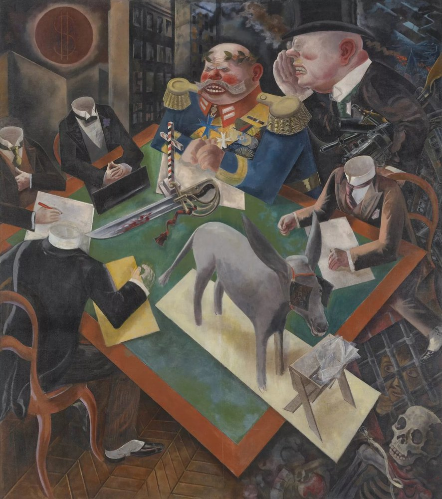

Eclipse of the Sun
George Grosz · 1926 · Oil on canvas · 207.3 × 182.6 cm · Heckscher Museum of Art, Huntington, New York
In copyright. Look and learn: shown for study, not for download.
Grosz brought this painting with him when he moved to the United States in 1933. It was thought lost, and it was found at the home of a house painter, Thomas Constantine, who had kept it rolled up in his garage for several years. The Heckscher Museum of Art acquired it in 1968 for $15,000, after a fund-raising effort by the museum's first professional director.